Our Story ❤️
Where It All Began
📅 13 January 2026
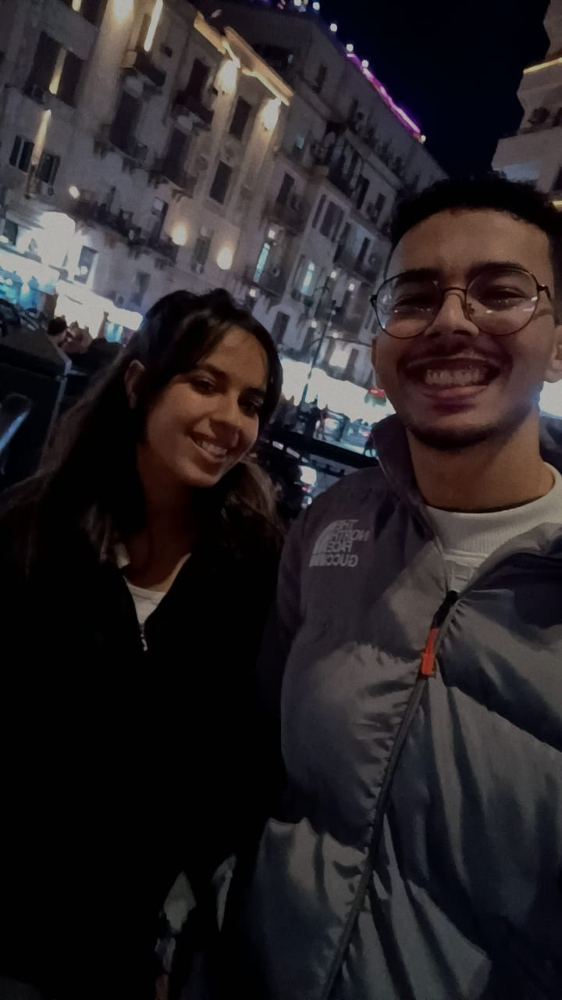
13 January 2026
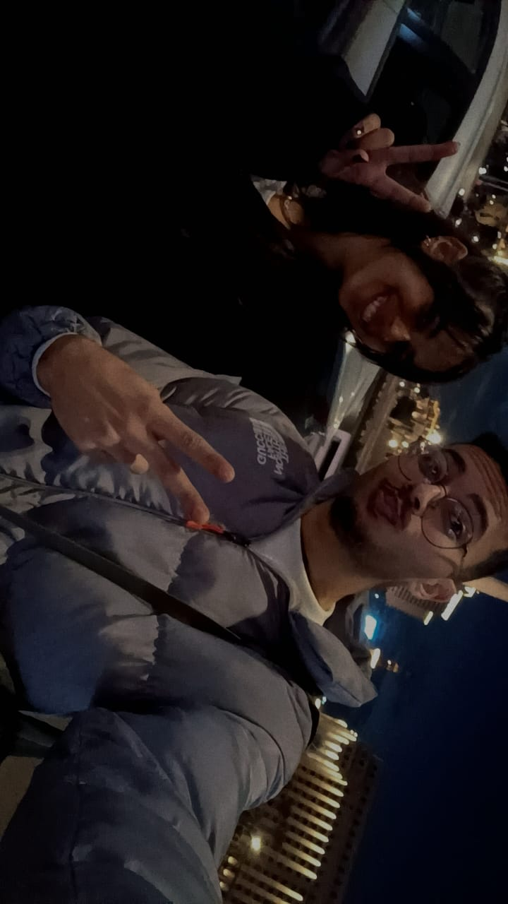
Where It All Began ❤️
📍 El Tahrir
This was our first picture together, the day we met to fix your laptop and shared ice cream afterward.
I remember every little detail of that day. I kept trying to make you laugh because I knew you hadn't gotten enough sleep, and seeing you smile made me happier than I could explain.
I also remember how beautiful you looked. Even now, when I look back at this picture, I can still see that same smile that caught my attention.
I was nervous the entire day, but somehow being with you made everything feel comfortable. It was one of those days I wished would never end.
Deep inside, I felt that something beautiful had just begun. I didn't know what the future would hold, but I knew that meeting you was going to change my life in the best way.
Why it's special ❤️
Because this was the day our story truly began. Every beautiful memory we have today started with this moment.
"If I could relive one day over and over again, this would always be one of my first choices. 🌸"
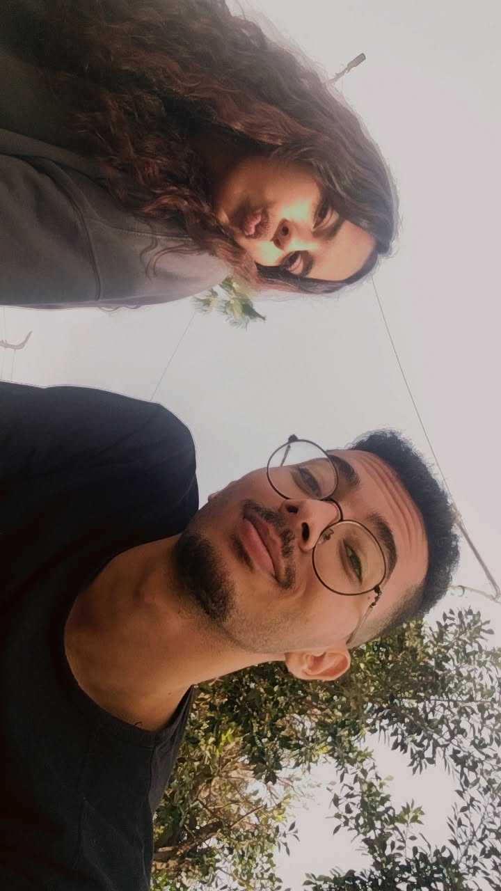
9 February 2026
Our First Walk Home Together 🚌
📍 Collage Park
This was the first time I helped you carry your bags after you came back from your trip. I walked you home, and afterward we went together to the park beside the college.
I still remember the first time I tasted your mom's cake. I wasn't expecting it to be so delicious, and I can still remember how much I enjoyed it.
We spent the whole day talking without ever getting bored. Then there was that funny moment when we both suddenly went quiet, and I said,
"ده the blind date show و دول اتنين ميعرفوش بعض."
We both burst into laughter, and it turned an ordinary moment into one I'll never forget.
Looking back now, I realize how genuinely happy I was just being there with you. Time seemed to pass so quickly whenever we were together.
Why it's special ❤️
I believe this was the day I truly realized that my feelings for you were becoming something much deeper. It was a turning point in our story, and from that moment on, I knew there was something truly special between us.
"Some conversations never really end. They simply become beautiful memories we'll always carry with us. 🌸"
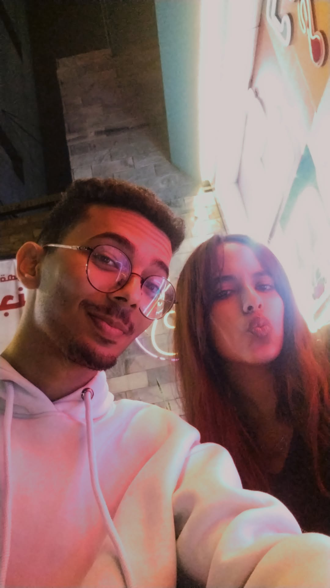
16 February 2026
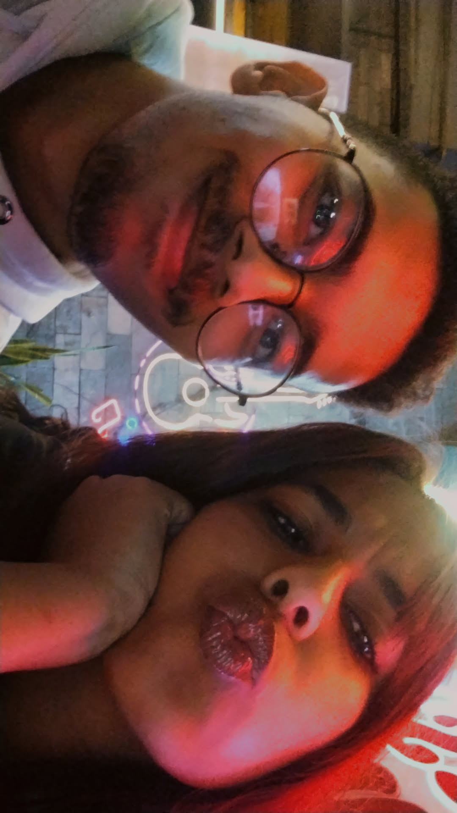
Our First Date 🥂✨
📍 Zamalek
This was our very first date, and I remember how nervous I was. I wanted everything to be perfect because I wanted this day to become one of our happiest memories.
I still remember the gift box I gave you and the smile on your face when you opened it. Seeing how happy you were made me happier than I could ever describe.
We sat by the Nile, drinking lemon mint while enjoying the beautiful view. It was such a peaceful evening, and I honestly wished time would slow down so we could stay there a little longer.
You were so cold that day, and I felt bad because I hadn't brought my jacket to keep you warm. Later, we ate shawarma together, and I couldn't stop looking at you while we were waiting for our food. I don't think you even noticed how often I was smiling just because you were there.
I also remember when you fed me Zalabia with your own hand. It was such a small moment, but it made my heart so happy, and I still smile whenever I think about it.
That was the day I truly realized how deeply I cared about you. It wasn't just our first date—it was the day I started imagining so many more memories with you.
Why it's special ❤️
It was close to Valentine's Day, and the beginning of Ramadan was just around the corner. It was also the first time I gave you a gift, and seeing your beautiful smile when you opened it is a memory I'll always carry in my heart.
"Some sunsets become unforgettable, not because of the view but because of who you watched them with. 🌅❤️"
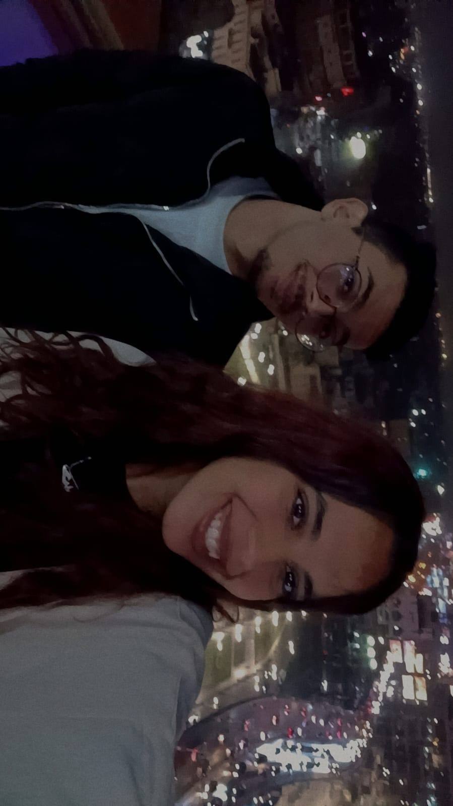
26 February 2026
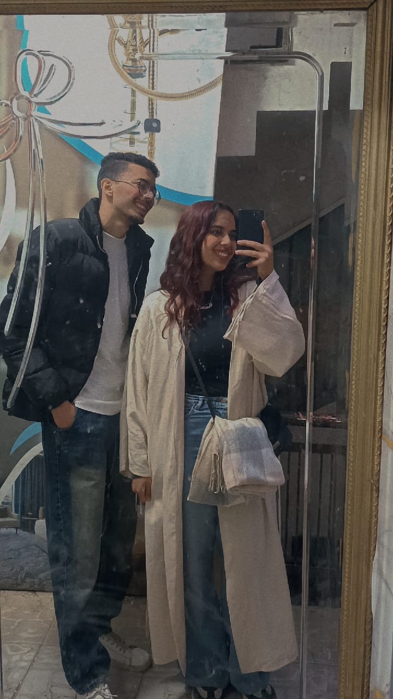
Finding Our Way Back ❤️🩹
📍 Ramses Building
This was the day after the difficult time we went through together.
I remember how lost I felt. I couldn't stop thinking about you, and all I wanted was to fix what had happened between us. The thought of losing you hurt more than I could explain.
I was trying so hard to hold back my tears while we were talking and trying to solve everything. When we finally understood each other and made things right again, I felt a happiness and relief that I'll never forget.
That day taught me something important. It made me realize that I never wanted to lose you, no matter what happened. I wanted us to face every problem together instead of letting it separate us.
Looking back now, I think this was one of the moments that made our relationship stronger. Sometimes love isn't about never having problems—it's about choosing each other even after the difficult moments.
Why it's special ❤️
It was the first time we went to Ramses Building together, and it became a special place for us. More importantly, it was the day we found our way back to each other, and that's a memory I'll always hold close to my heart.
"Some days test love and some days remind us why it's worth holding on to. ❤️🩹"
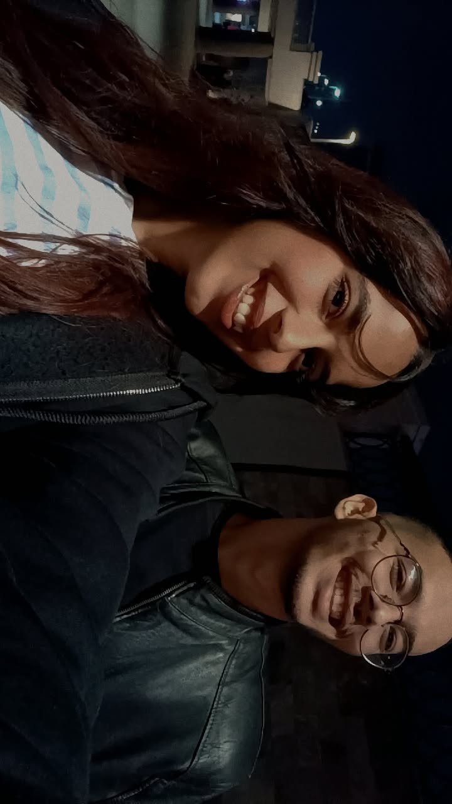
3 March 2026
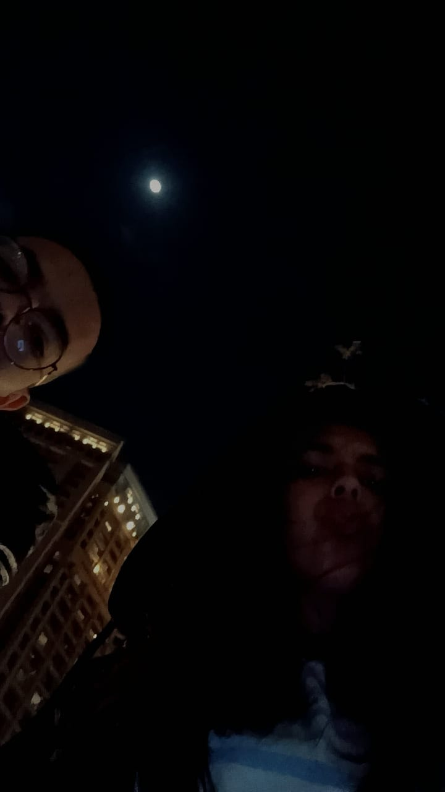
Our First Walk at Mamsha Ahl Misr 🌉
📍 Mamsha Ahl Misr
This was our first long walk together along the Nile, and I still remember how peaceful and beautiful that evening felt.
I also remember that this was the day I got my buzz cut. I was honestly nervous about what you would think of my new look, but seeing your reaction made me feel so much better because you actually liked it.
It was also our first time visiting Mamsha Ahl Misr. We spent hours walking, talking, and simply enjoying each other's company. Somehow, even the longest walk never felt long when I was with you.
I brought some Konafa and Qatayef for us to share, and I still remember watching you try kebda for the first time. Your reaction was priceless—you were so surprised by how delicious it was, and seeing you enjoy it made me smile.
And of course... I could never forget our funny conversation while we were sitting together:
"مش بتعرف تربع يا محمود كدا هتولد ازاي؟"
ضحكتِ وبعدها قلتي: "قصدي هولّد."
وقولتلك: "آه أكيد هولّد شحنة كهربائية!" 😂
That moment still makes me laugh every time I think about it.
Why it's special ❤️
This became one of my favorite memories because it was the first time I felt that all I wanted was to hold your hand and never let go. It was also the first time I gave you a flower 🌹🌹, and seeing your smile while you held it is a memory I'll always treasure.
"Sometimes the happiest memories come from the simplest walks with the person you love. 🌸"
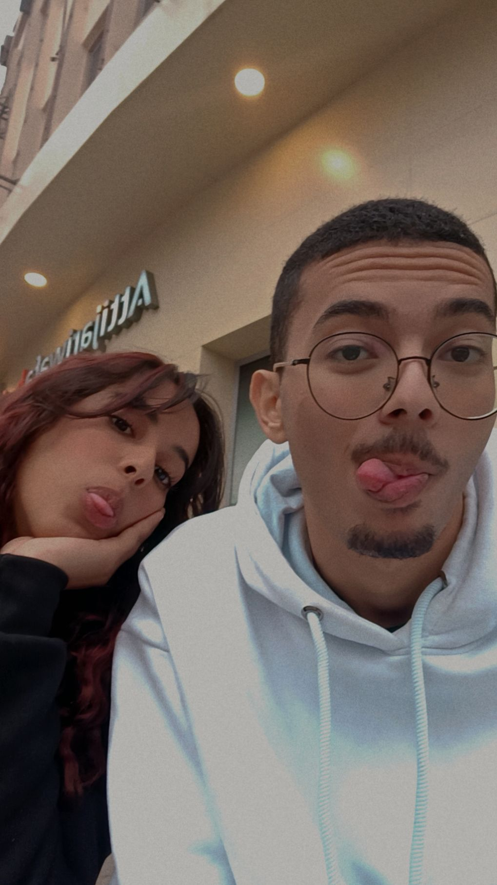
12 March 2026
Our First Iftar Together 🌙🍕
📍 Primos Pizza & Zamalek
It was our first Iftar together during Ramadan, and also the first time we shared a pizza at Primos. I still remember how excited I was because it felt like we were creating another beautiful "first" together.
That day, I wasn't feeling well at all. My stomach hurt so much, and I could barely enjoy anything. But the moment I saw how worried you were about me and how much you cared, I realized just how deeply in love with you I had fallen. Your kindness made me feel better more than any medicine could.
After I started feeling better, we went to Zamalek on a Rabbit scooter. It was such a fun adventure, and I still remember us making flowers together. We laughed so much, and it turned an ordinary evening into one I'll never forget.
It was also the first time we rode a Rabbit scooter together. Who would've thought that something so simple would become one of our favorite little traditions?
And of course... I can never forget when you tried riding it by yourself and almost crashed into that old man. 😂 It still makes me laugh every time I remember it.
Why it's special ❤️
When I walked you home that night, I told you, "بحبك." For the first time, you looked at me and said, "وأنا كمان بحبك." Those words filled my heart with a happiness I'll never be able to describe. It wasn't just a sentence—it became one of the most unforgettable moments of my life.
"Some words are only said once for the first time... but their echo stays in the heart forever. 🌙❤️"
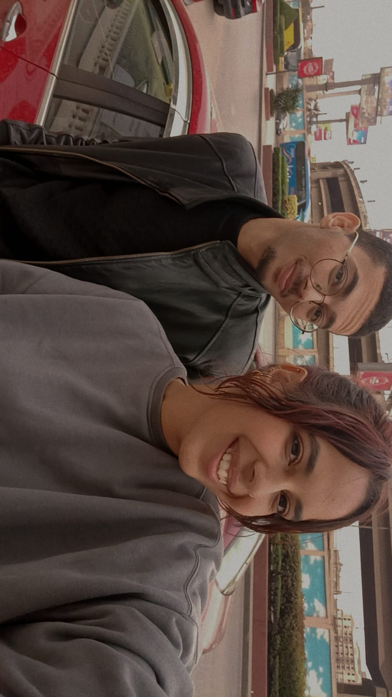
14 March 2026
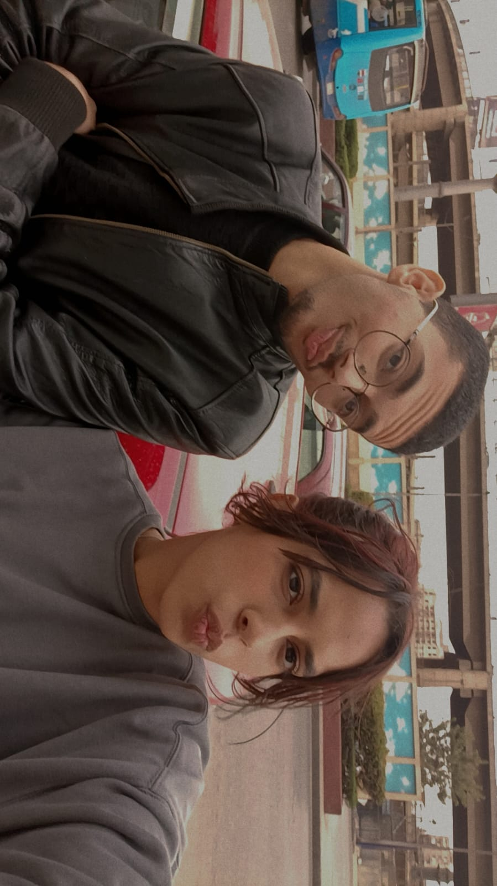
Until We Meet Again 👋❤️
📍 Ramses
This day came after so many beautiful dates and memories together. By then, I had already fallen more deeply in love with you than I ever expected.
It was one of the most emotional moments I had ever experienced because you were leaving for a while, and I didn't know when I would see you again.
I remember trying so hard to hide my tears because I didn't want you to see how much I was hurting. At the same time, I had never felt so sure about how much you meant to me.
That was the moment I truly realized how difficult it was to be away from you. It wasn't just about missing you—it felt like a part of my happiness was leaving with you.
Even though we spent the day laughing, talking, and making more beautiful memories together, I couldn't stop thinking about the moment we would have to say goodbye.
I still remember when the bus finally arrived and you looked at me and said,
"محمود... أنا بحبك."
Those words stayed with me long after the bus had disappeared.
Why it's special ❤️
Honestly, this wasn't one of my happiest memories because saying goodbye was incredibly difficult. But it was the day I realized just how important you had become in my life. It showed me that loving someone also means missing them whenever they're far away.
"Distance never changed what I felt for you... it only made me realize how much my heart had already chosen you. ❤️"
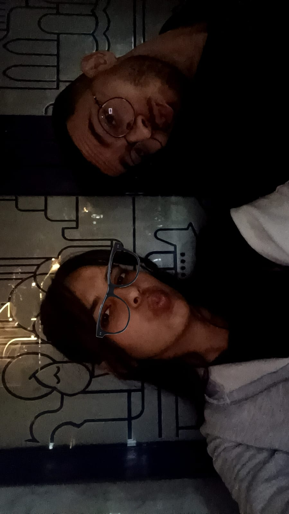
25 March 2026
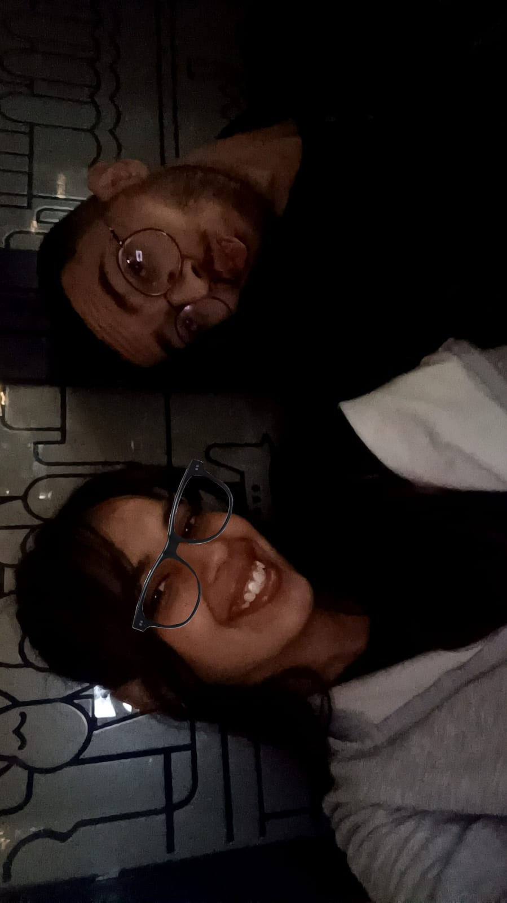
The Road That Became Ours 🌸👣
📍 Ramses & Tahrir
As usual, after I walked you home when you came back, next day we went to our favorite place—Ramses Building.
We spent the first part of the day there, and then, for the very first time, we decided to walk all the way to Tahrir together.
I loved every second of that walk. I couldn't stop looking at you while we were walking beside each other. To me, you looked like the kind of beautiful girl I'd only ever imagined meeting in a fairy tale.
Later, we sat together on a bench under the Bank, talking about everything and nothing at the same time. Those are the moments when time seemed to stop, and we took these pictures together to remember them forever.
I also remember how happy I was because we had finally spent time together again after being apart for so long. I'll never forget how we both laughed when we passed Cairo Inn and I found out that you had been there before.
Why it's special ❤️
This road became one of my favorite places, not because of how it looked, but because every step I took there was beside you. Now, whenever I think of that road, I don't remember the buildings or the streets... I remember us.
"Some roads become unforgettable, not because of where they lead... but because of who walked beside you. 🌸"
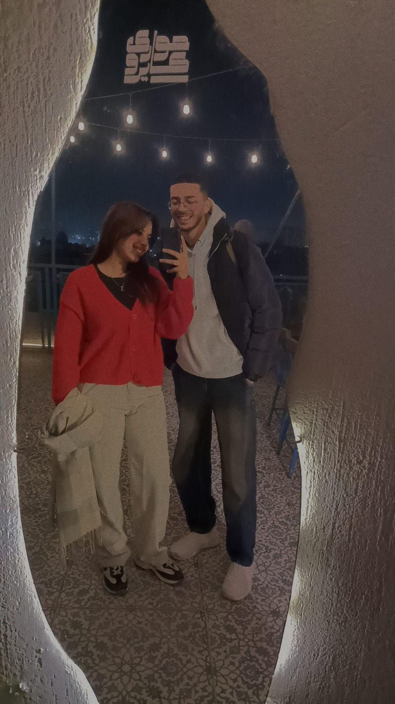
27 March 2026
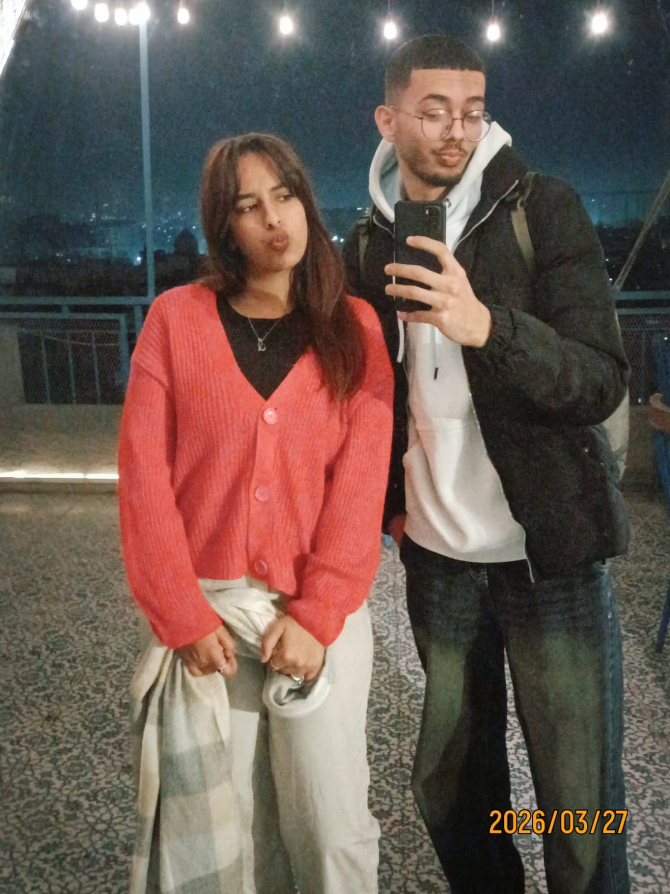
Our Night Above Cairo 🌃✨
📍 7Wary Cairo Roof, Korba
At this day we visited 7Wary Cairo Roof for the very first time.
It was one of the places I had always dreamed of taking you to, so being there with you made me incredibly happy. It felt like one of those little dreams I had finally made come true.
We took so many beautiful pictures together that day. One of them even became your profile picture, and I still feel proud knowing that I was the one who captured it. ✨✨
I also tried a Passion Fruit Mojito for the first time, while you ordered the Strawberry Mojito. Both were delicious, but honestly, nothing was sweeter than seeing you smile while enjoying the view. 🌙
I remember how much you loved the view from up there. Watching the city lights with you beside me felt unreal. It was one of those moments when I quietly thought to myself, "I'm really living the dream with the girl I love.✨❤️"
Why it's special ❤️
That evening felt like a little piece of heaven. Even though the weather was cold, I never felt cold at all, because simply being with you made my heart feel warm.
"Some views are beautiful... but they become unforgettable when the right person is standing beside you. 🌃❤️"
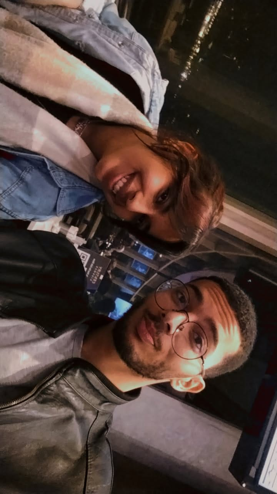
2 April 2026
Our First Movie Date 🎬❤️🍿
📍 El Manial
It was our first time going to the cinema together, and also our first time shopping together at Gomla Market.
That day wasn't perfect from the beginning. We had a small disagreement while we were at the market, and I still remember us walking for a while without saying a single word to each other.
When we finally arrived at the cinema, you told me that you had been scared because of the way I reacted. Hearing that broke my heart. I explained myself, apologized, and promised that I would never make you feel that way again. After that, we slowly started smiling, talking, and laughing together again.
One of my favorite moments happened while I was recording a streak. At the very end of the video, you suddenly said, "I love you." I wasn't expecting it at all, and it made me so happy. Of course, I told you that I loved you too.
Then we watched the movie together, and honestly, I enjoyed every second of it because I was sharing it with you. I'll never forget the parts that made us laugh so hard:
"اقلِيه بقى يا شوقي!" 😂
"الحق يا شوقي دول لابسين يونيفورم!" 😂
Even now, those lines still make me smile because they remind me of us.
Why it's special ❤️
This day was special because going to the cinema with you had always been one of my little dreams. It was also the day I finally gathered the courage to do the move, but I was very nervous and didn't do this. 😂😂😂
"Love isn't about never arguing... it's about always finding your way back to each other. ❤️🎬"
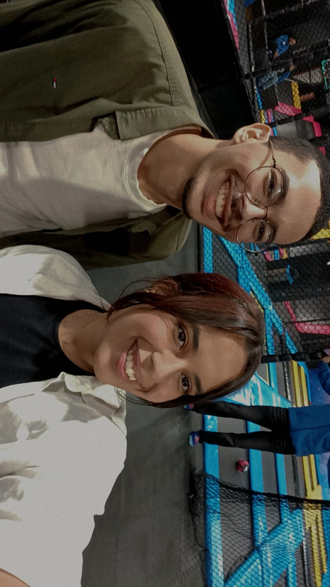
24 April 2026
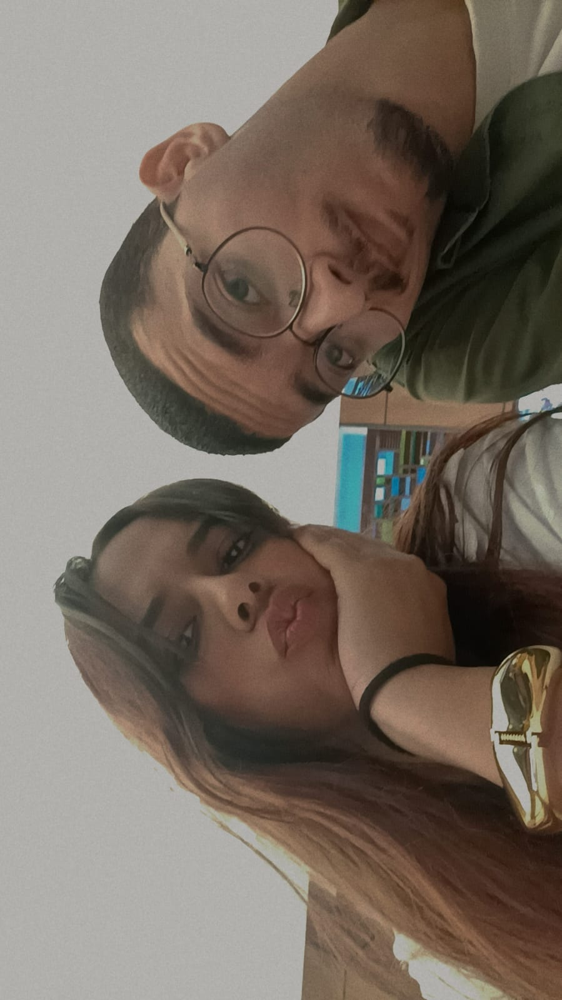
Gravity Code And Buffalo Burger 🌌🍔
📍 Gravity Code, Mall of Egypt
We had been planning this date for a long time, so when the day finally arrived, I was more excited than I could explain.
That day made me feel like a little kid again. We spent so much time jumping on the trampolines, laughing at each other, and forgetting about everything else.
I still remember you trying over and over again to score a basket. It took a while, but when you finally made it, we celebrated like we had just won a championship.
I also can't stop laughing whenever I remember the dodgeball game. You kept throwing the balls straight at my face, and somehow I kept failing to dodge them every single time. 😂 Then we played mini football, and of course... I had to score a few goals.
After all that playing, we were unbelievably hungry. That was also the day I discovered something very important about you... you become a little angry when you're hungry. 😂❤️
We finally ordered Buffalo Burger. It was my first time trying it, and it tasted amazing. But what made it even better was sharing that meal with you after such a fun day.
Why it's special ❤️
This date was different from all the others. It wasn't about sitting somewhere and talking—it was about laughing, playing, acting like kids, and making unforgettable memories together. We had been waiting for this day for so long, and finally living it with you made every moment worth the wait.
"Growing older is inevitable... but growing up is optional when I'm with you. 🌌❤️"
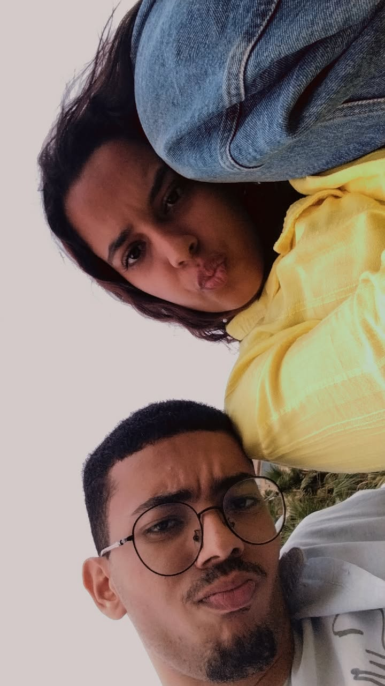
15 June 2026
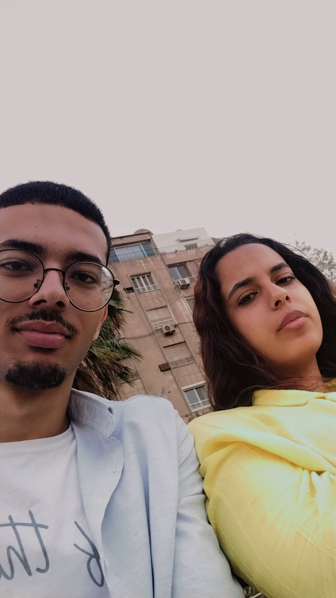
A Perfect Day Together 🎬🤍
📍 Mamsha Ahl El Zamalek & Downtown Cairo
We started our day in Zamalek, just like we loved to do, walking together along the Nile and enjoying every little moment.
We spent some time at Mamsha Ahl El Zamalek, making flowers together and sitting by the river. Those quiet moments with you always made me feel so peaceful.
I still remember how beautiful you looked in that yellow shirt. You always look beautiful, Habibt Alby. ❤️ I also remember the security guard who was a little rude to us. It annoyed you for a moment, but we didn't let it ruin our day—we just kept smiling and enjoying our time together.
After our walk, we took the metro to the cinema. Finally, we got our tickets! I couldn't stop thinking about the first time we had tried to watch a movie together but couldn't because of the Etisalat Cash problem. This time, everything worked out perfectly, and it made finally getting there feel even more special.
The movie itself was... very embarrassing. 😂 We both laughed so much, and I remember how embarrassed you were during some scenes. In the end, none of that mattered—we had fun, shared popcorn, and created another memory together.
Why it's special ❤️
This became one of the dates I'll always treasure because I spent so much of the day holding your hand. It was such a simple thing, yet it made me feel closer to you than ever before. Sometimes happiness isn't found in big moments—it lives in the little things, like walking hand in hand with the person you love.
"Sometimes love is simply walking hand in hand, forgetting about the rest of the world. 🤍"
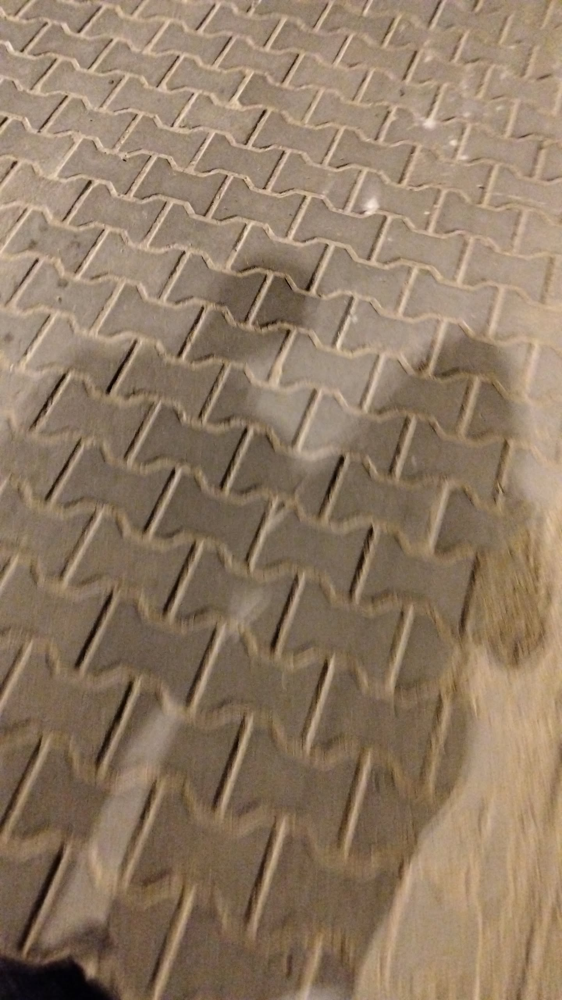
23 June 2026
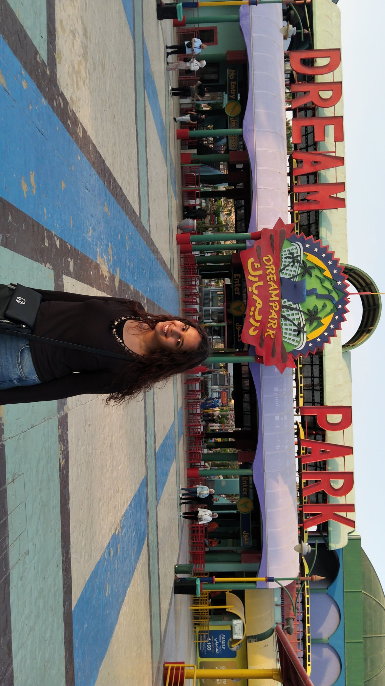
Our Dream Park Adventure 🎢❤️🎡
📍 Dream Park, 6th of October City
No words could ever fully describe this day because it was filled with so many unforgettable moments.
We had been planning this date for months, and when the day finally arrived, you weren't feeling well because of Shakira. I was afraid we might have to cancel everything, but you took some painkillers, rested for a while, and thankfully we were still able to go to Dream Park together.
By the time we arrived, we were already late, so we started running from one ride to another, trying to enjoy as much as we could. But after only a few rides, especially after Discovery, you suddenly became very tired and dizzy, so we decided to stop.
You have no idea how worried I was. All I wanted was to see you feeling better again. I remember running to buy you some juice and Oreos and my pants were about to fall down 😂😂, hoping they would help. After a little while, thank God, you slowly started feeling better.
We sat together on a bench, sharing the mahshi we had brought with us. Looking back, that simple moment became one of my favorite parts of the entire day. I wasn't thinking about the rides anymore—I was just grateful that you were okay.
Why it's special ❤️
No one could ever tell me this wasn't a special day. It was full of unexpected moments, emotions, and memories that I'll never forget.
But the most beautiful part came at the end of the day. On our way home, you fell asleep on my shoulder while I held your hand the whole journey. In that quiet moment, everything felt peaceful. It was one of the happiest moments of my life.
And your kiss that day...
It's a memory I'll always keep in my heart.
"Some dreams come true in amusement parks... mine came true the moment you rested your head on my shoulder. 🎡❤️"
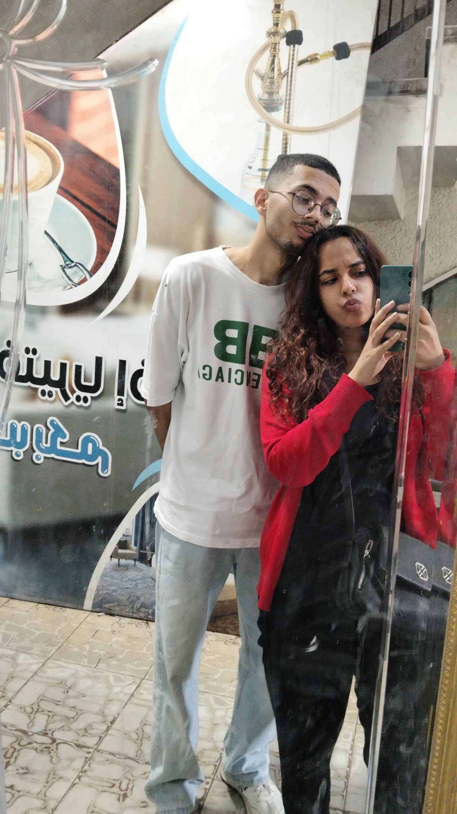
25 June 2026
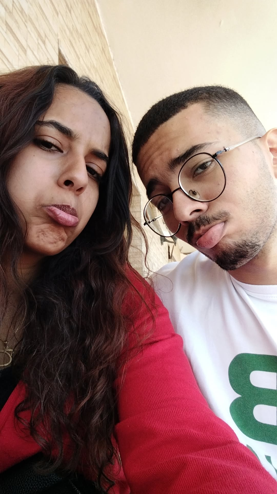
The End of Our First Chapter 📖❤️
📍 Ramses Building
Finally, the last special day before you traveled back home.
I had known this day would eventually come, but I never imagined it would arrive so quickly. No matter how prepared I thought I was, nothing could prepare me for having to say goodbye to you again.
It was a day filled with emotions. We weren't just talking with words anymore—we were speaking through our hearts.
I still remember the moment I saw you that morning. I was already holding back my tears because I knew I wouldn't see you again for a while. We ordered an Uber, went to Ramses to buy your bus ticket, and then spent the rest of the day at our special place.
I remember every single second of that day. I held your hand almost the entire time because I didn't want to let go. I kissed your hand, and eventually I couldn't hold back my tears anymore.
I still remember us playing the numbers game and Boom, talking honestly about our feelings, and your kisses on my cheeks that I can still remember even now.
When it was finally time to leave, we spent our last quiet moments together in the office. You rested your head on my shoulder while I held you close, wishing that time would stop for just a little longer.
Why it's special ❤️
I have always hated goodbyes.
Not because they mean the end...
But because they remind me how much someone means to me.
When the bus was finally ready to leave, I helped you find your seat. We shared one last quick hug, but somehow it felt longer than any hug I ever had. Then I stepped off the bus, looked through the window one last time, and my tears started falling again.
But this wasn't our last goodbye.
It was only the last goodbye before another beautiful chapter begins.
I know you'll come back.
And just like always...
I'll be waiting for you, ready to surprise you with another adventure, another date, another memory, and another reason for us to smile together.
"Every goodbye is only a promise that we'll have another hello. ❤️"
Our Story So Far... ❤️
Looking back at these memories, I realized something beautiful.
Love wasn't built in one magical moment.
It was built in every laugh...
every long walk...
every goodbye...
every hug...
every little argument we solved together...
every "I love you"...
and every ordinary day that became extraordinary simply because you were there.
These fourteen memories are only the beginning of our story.
They remind me how lucky I am to have you beside me, and they make me even more excited for all the memories we haven't created yet.
I know that years from now we'll look back at these pictures, smile, laugh at our inside jokes, and remember exactly how happy we were.
And that's my favorite thought...
Because this isn't the end of our story.
It's only the end of the first chapter.